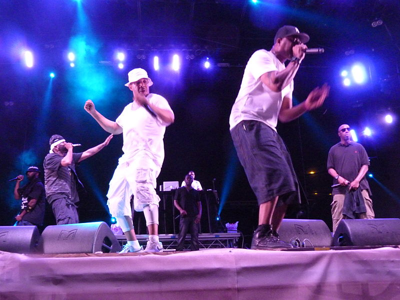

Nasir bin Olu Dara Jones[11] was born in the Brooklyn borough of New York City on September 14, 1973, to African American parents.[12][13] His father, Olu Dara (born Charles Jones III), is a jazz and blues musician from Mississippi. His mother, Fannie Ann (née Little; 1941–2002) was a U.S. Postal Service worker from North Carolina.[14][15][16] He has a brother, Jabari Fret, who raps under the name Jungle and is a member of hip hop group Bravehearts. His father adopted the name "Olu Dara" from the Yoruba people.[17] "Nasir" is an Arabic name meaning "helper and protector", while "bin" means "son of" in Arabic.[18] He is a cousin of actors Yara Shahidi and Sayeed Shahidi.[19]
As a young child, Nas and his family relocated to the Queensbridge housing project of the Long Island City community area in the borough of Queens. His neighbor, Willie "Ill Will" Graham, influenced his interest in hip hop by playing him records.[20] His parents divorced in 1985,[20] and he dropped out of school after the eighth grade.[13] He educated himself about African culture through the Five-Percent Nation (a splinter group of the Nation of Islam)[21] and the Nuwaubian Nation. In his early years, he played the trumpet and began writing his own rhymes.[22]
Wikipedia LinkIn the late 1980s, cousins Robert Diggs, Gary Grice, and Russell Jones formed a group named Force of the Imperial Master, also known as the All in Together Now Crew.[14] Each member recorded under an alias: Diggs as Prince Rakeem or The Scientist, Grice as The Genius, and Jones as The Specialist.[citation needed] The group never signed to a major label, but caught the attention of the New York City rap scene and was recognized by rapper Biz Markie.[15] By 1991, The Genius and Prince Rakeem were signed to separate record labels.[16] The Genius released Words from the Genius (1991) on Cold Chillin' Records and Prince Rakeem released Ooh I Love You Rakeem (1991) on Tommy Boy Records.[16] Both were soon dropped by their labels. They then adopted new monikers; The Genius became GZA (pronounced "jizza"), and Prince Rakeem became RZA (pronounced "rizza").[17] The Specialist also took on a new name and became known as Ol' Dirty Bastard.

RZA began collaborating with Dennis Coles, later known as Ghostface Killah, another rapper from the Stapleton Houses in Staten Island. The duo decided to create a hip hop group whose ethos would be a blend of "Eastern philosophy picked up from kung fu movies, Five-Percent Nation teachings picked up on the New York streets, and comic books".[17] Wu-Tang Clan assembled in late 1992, with RZA as the de facto leader and the group's producer.[13] RZA and Ol' Dirty Bastard adopted the name for the group after the film Shaolin and Wu Tang.[18] The group developed backronyms for the name (as hip hop pioneers such as KRS-One and Big Daddy Kane did with their names), including "We Usually Take All Niggas' Garments", "Witty Unpredictable Talent And Natural Game", and "Wisdom of the Universe, and the Truth of Allah for the Nation of the Gods".[18] Wikipedia Link